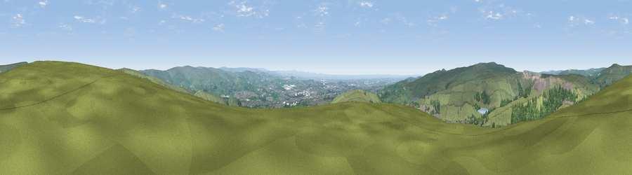

Viewpoint near Whitworth
#7348 in England · top 7% of its area beats it · near WhitworthWhere it is
The exact computed spot (SD 89725 18525). Click the marker for map links.
The view, rendered

A 360° render of this exact spot computed from the terrain model, tree cover and land cover — summer colours, afternoon light, calibrated against photographs of famous viewpoints. Real trees, hedges and buildings will differ in detail.
The panorama
Grey silhouette: terrain skyline in each direction (720 bearings, Earth curvature and refraction included). Dashed green: skyline with trees (+15 m) and buildings (+8 m) as obstacles. Blue strip: how far the ground is visible on each bearing.
Where the view opens
Wedge length = distance to the farthest visible ground on that bearing (vegetation-aware). Rings at 10, 25 and 50 km.
What fills the view
67% grassland · 19% woodland · 13% built-up ·
Angular shares of the visible panorama (visual magnitude), not map area. Landscape diversity 0.40 (0–1 Shannon).
Key numbers
More beautiful places nearby
The staircase of upgrades: each row has a higher view potential than everything closer. Driving times are estimates from straight-line distance, calibrated against real road routing — check an actual route before setting out.
| Place | Direction | Drive | Score |
|---|---|---|---|
| Viewpoint near Edenfield | W · 8 km | ~15 min | 77.5 |
| Darwen Hill | W · 22 km | ~37 min | 80.7 |
| White Brow | WSW · 24 km | ~40 min | 82.9 |
| Warton Crag | NW · 68 km | ~91 min | 83.2 |
| Viewpoint near Grange-over-Sands | NW · 78 km | ~102 min | 83.4 |
| Viewpoint near Cartmel | NW · 81 km | ~105 min | 87.0 |
| Viewpoint near Cartmel | NW · 82 km | ~106 min | 87.2 |
| Viewpoint near Finsthwaite | NW · 86 km | ~111 min | 90.3 |
53.66311, -2.15697 · source: screening · position refined by local search. Computed location — check access rights before visiting.